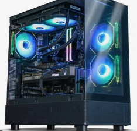

Características generales

Equipo de sobremesa destinado a tareas de ofimática, navegación y prácticas de administración de sistemas.
- Tipo de equipo
- Ordenador de sobremesa
- Procesador
- Intel Core i5
- Memoria RAM
- 16 GB
- Almacenamiento
- SSD de 512 GB
- Sistema operativo
- Windows 11
Componentes principales
- Procesador
- Memoria RAM
- Unidad SSD
- Placa base
- Fuente de alimentación
Información sobre procesadores: Página oficial de Intel
Pasos de mantenimiento
- Comprobar el estado general del equipo.
- Revisar el sistema operativo.
- Comprobar el almacenamiento.
- Actualizar el software.
- Verificar su funcionamiento.